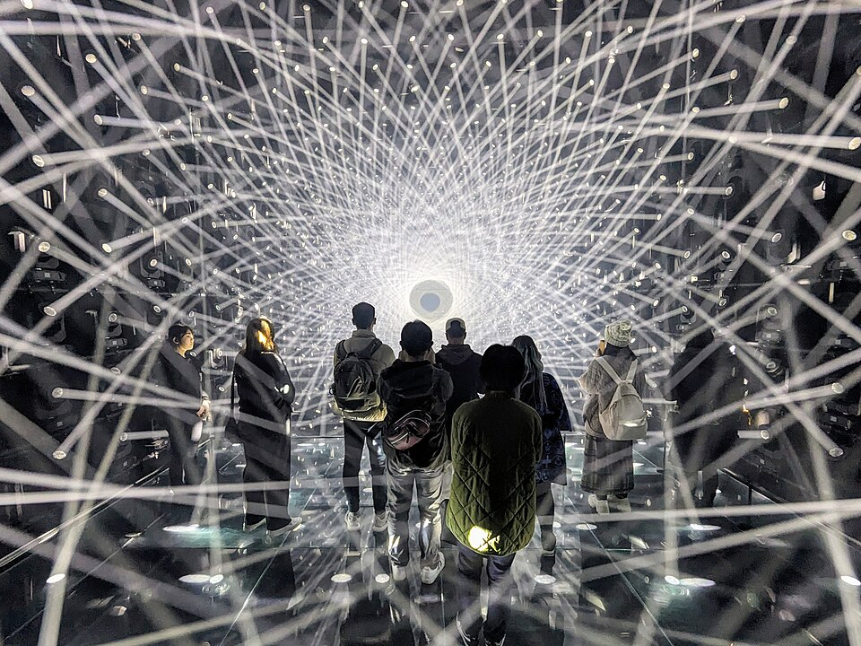
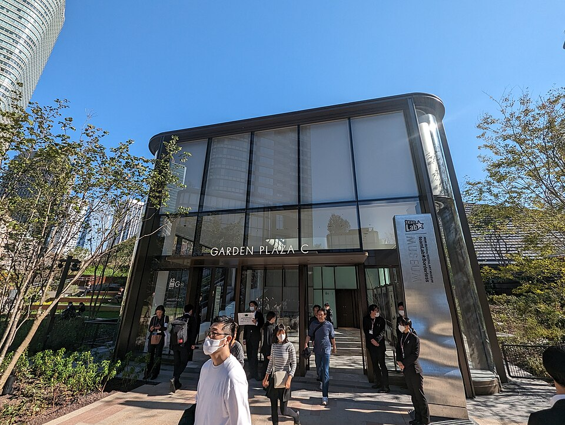
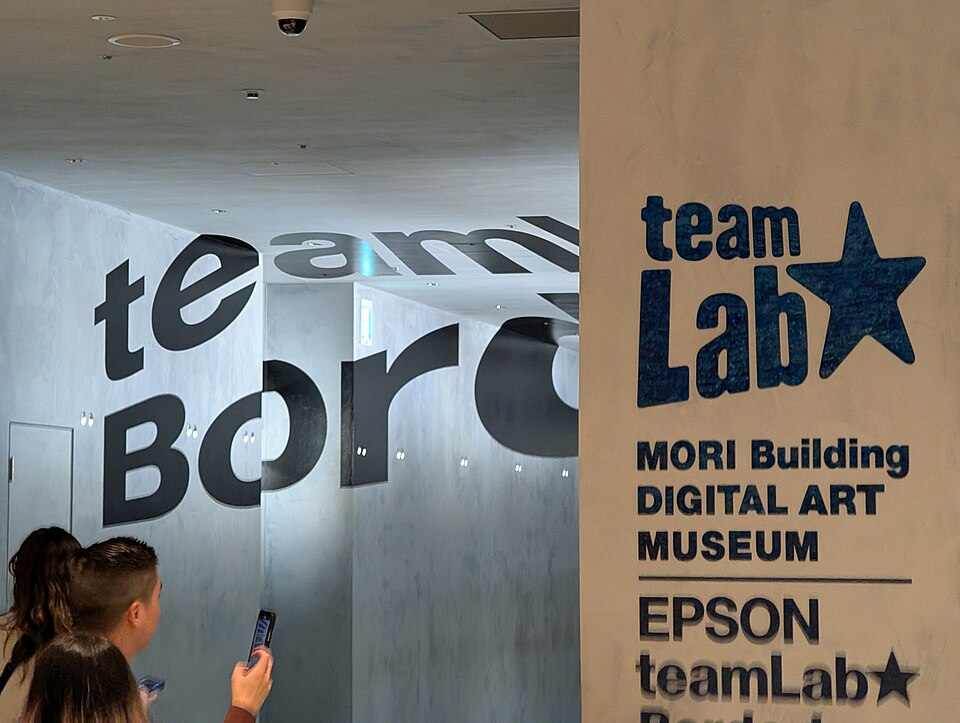

Photo credit: DannyWithLove, CC BY-SA 4.0; Syced, CC0; Syced, CC0 (Wikimedia Commons)
teamLab Borderless (choose one Tokyo teamLab)
A · Strongest fitA huge digital-art museum in central Tokyo where rooms flow into each other and the art moves around you. Book a timed ticket ahead. Choose this or teamLab Planets, not both.
What to expect: Wander the open, interconnected rooms with shoes on; there is no fixed route. An optional tea house stop is a café purchase, not required.
Main tradeoff: Timed entry, dynamic prices and internal crowding; sold only on the official site and Klook.
Why it ranks here: Highest verified review base of any paid indoor attraction here, central, weatherproof and short; take it or teamLab Planets, not both.
Memory overlap: Roppongi and Azabudai winter illumination walk (now researched in iteration 2; same area as teamLab Borderless). The rank was reviewed against it and left as is.
More details and sources
- Traveler evidence
- Seen 2026-10-19/20: Klook about 4.7 (24.3K, rounded) [S35, S36]; Google Maps 4.6 (30,677) [S46]. I did not record Viator, GetYourGuide or TripAdvisor figures for Borderless. Snippet only, not opened: an r/TokyoTravel thread (about 2 years old) says "If I had to choose one I would do Borderless", and blog snippets prefer Borderless for free-roaming wandering and flat floors, Planets for physical immersion [S87]. No recurring "overrated" signal was found in what I could read.
- Location and access
- Azabudai Hills in central Tokyo [S46]; roughly 20-40 minutes from the main districts (iteration 1 figure, not rechecked). Allow 400-800 yen return.
- Time and physical effort
- 2-3 hours standing and walking in low light; not a seated show.
- Approximate cost
- Observed official adult price 3,400, dynamically priced [S01]; Klook from US$25.25, about 3,800 at the assumed 150 JPY per USD [S36]. Klook also lists a Flexible pass (US$79.65) and a Tokyo City View combo (US$39.85) that are not needed. Transport is extra (allowance).
- Crowds and booking
- The official site says tickets are sold only on the official site and Klook, not at the venue (about 200 yen more on site if available), and the date can be changed up to 3 times [S01]. Klook shows "No cancellation" but allows changes [S36]. No queue-time data was found.
- Late-November / early-December fit
- Indoor, so weather-proof. Hours 8:30-21:00 with last entry 1 hour before closing; closed Tuesdays (the official page lists Oct 20, Nov 24 and Dec 8), so no listed closure falls between Nov 25 and Dec 2 [S01].
- Safety and constraints
- Dark rooms, mirrored surfaces and flashing light are likely (model knowledge, unverified for Borderless). No pork or alcohol requirement; any café purchase is optional.
- Uncertainty / what to verify
- Exact dynamic price and slot inventory for the chosen date; Borderless figures on Viator, GetYourGuide and TripAdvisor were not recorded; Reddit not opened.
- Sources
- S01, S35, S36, S46, S87